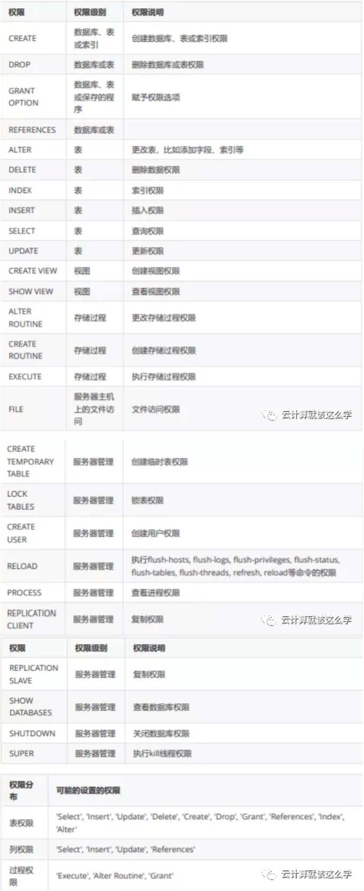

第九节 MySQL 的用户管理和权限管理
1、DCL（数据库控制语言）
数据库授权、角色控制等操作
GRANT用户授权，为用户赋予访问权限REVOKE取消授权，撤回授权权限
2、MySQL 权限表
2-1 mysql.user
- 用户字段：Host、User、Password
- 权限字段：
_Priv结尾的字段 - 安全字段：
ssl x509字段 - 资源控制字段：
max_开头的字段
2-2 mysql.db
- 用户字段：Host、User、Password
- 权限字段：剩下的
_Priv结尾的字段
2-3 mysql.tables_priv，mysql.columns_priv、procs_priv
表、列、存储过程的授权表
2-4 授权级别排列
mysql.user#全局授权mysql.db#数据库级别授权- 其他 #表级，列级授权
2-5 数据库和表格式
- 数据库名.* 数据库中的所有
- 数据库名.表名 指定数据库中的某张表
- 数据库名.存储过程 指定数据库中的存储过程
*.*所有数据库
2-6 用户和 IP格式
- 用户名@IP地址 用户只能在改IP下才能访问
- 用户名@192.168.1.% 用户只能在改IP段下才能访问(通配符%表示任意)
- 用户名@%.qfedu.com
- 用户名@% 用户可以再任意IP下访问(默认IP地址为%)
3、MySQL 用户管理
3-1 创建用户
CREATE USER语句创建
CREATE USER '用户名'@'IP地址' [ IDENTIFIED BY '密码' ]；
GRANT语句创建
GRANT SELECT ON *.* TO '用户名'@’IP地址’ IDENTIFIED BY "密码"；
创建实例
CREATE USER 'qfedu'@'localhost' IDENTIFIED BY '123456';
CREATE USER 'qfedu'@'192.168.1.101' IDENDIFIED BY '123456';
CREATE USER 'qfedu'@'192.168.1.%' IDENDIFIED BY '123456';
CREATE USER 'qfedu'@'%' IDENTIFIED BY '123456';
GRANT ALL ON *.* TO 'user3'@’localhost’ IDENTIFIED BY ‘123456’;
3-2 删除用户
DROP USER 删除
DROP USER 删除
DROP USER 'user1'@’localhost’;
DELETE 语句删除
DELETE FROM mysql.user WHERE user='用户名' AND host='IP地址'
DELETE FROM mysql.user WHERE user=’user2’ AND host=’localhost’;
3-3 修改用户
RENAME USER '旧用户名'@'IP地址' TO '新用户名'@'IP地址' ;
RENAME USER 'old_user'@‘localhost’ TO 'new_user'@'localhost';
3-4 修改密码
注意：修改完密码必须刷新权限
FLUSH PRIVILEGES;
root 用户修改自己密码
方法一：
mysqladmin -uroot -p123 password 'new_password' # 123为旧密码
方法二：
alter user 'root'@'localhost' identified by 'new_pssword';
方法三：
SET PASSWORD=password(‘new_password’);
root 修改其他用户密码
方法一：
alter user 'qfedu'@'localhost' identified by 'Qfedu.1234com';
方法三：
GRANT SELECT ON *.* TO 用户名@’ip地址’ IDENTIFIED BY ‘yuan’;
普通用户修改自己密码
SET password=password(‘new_password’);
3-5 找回 root 密码
修改 MySQL 配置文件
在[mysqld]下面加上 skip-grant-tables
[root@qfedu.com ~]# vim /etc/my.cnf
[mysqld]
···
#设置免密登录
skip-grant-tables
[root@qfedu.com ~]# vim /etc/my.cnf
[mysqld]
重启 MySQL
[root@qfedu.com ~]# systemctl restart mysqld
终端输入 mysql 直接登录 MySQL数据库
切换到 MySQL 系统库 mysql
设置密码
mysql> update user set authentication_string=password('密码') where user='root';
3-6 注释掉免密登录
[root@qfedu.com ~]# vim /etc/my.cnf
[mysqld]
···
#设置免密登录
#skip-grant-tables
3-7 重启 MySQL 然后登录
[root@qfedu.com ~]# systemctl restart mysqld
[root@qfedu.com ~]# mysql -uroot -p
3-8 密码复杂度
安装密码插件
MySQL 默认启用了密码复杂度设置，插件名字叫做 validate_password
mysql> INSTALL PLUGIN validate_password SONAME 'validate_password.so';
修改配置文件
修改配置
[root@qfedu.com ~]# vim /etc/my.cnf
[mysqld]
plugin-load=validate_password.so
validate_password_policy=0
validate-password=FORCE_PLUS_PERMANENT
重启MySQL生效
[root@qfedu.com ~]# systemctl restart mysqld
查看错误日志
登陆数据库查看
mysql> show variables like 'validate%';
+--------------------------------------+--------+
| Variable_name | Value |
+--------------------------------------+--------+
| validate_password_check_user_name | OFF |
| validate_password_dictionary_file | |
| validate_password_length | 8 |
| validate_password_mixed_case_count | 1 |
| validate_password_number_count | 1 |
| validate_password_policy | MEDIUM |
| validate_password_special_char_count | 1 |
+--------------------------------------+--------+
7 rows in set (0.04 sec)
validate_password_policy
代表的密码策略，可配置的值有以下：默认是MEDIUM 0 or LOW 仅需需符合密码长度（由参数validate_password_length指定）
- 1 or MEDIUM 满足LOW策略，同时还需满足至少有1个数字，小写字母，大写字母和特殊字符
- 2 or STRONG 满足MEDIUM策略，同时密码不能存在字典文件（dictionary file）中
validate_password_dictionary_file
用于配置密码的字典文件，当validate_password_policy设置为STRONG时可以配置密码字典文 件，字典文件中存在的密码不得使用。
validate_password_length
用来设置密码的最小长度，默认值是8最小是0
validate_password_mixed_case_count
当validate_password_policy设置为MEDIUM或者STRONG时，密码中至少同时拥有的小写和大写 字母的数量，默认是1最小是0；默认是至少拥有一个小写和一个大写字母。
validate_password_number_count
当validate_password_policy设置为MEDIUM或者STRONG时，密码中至少拥有的数字的个数，默 认1最小是0
validate_password_special_char_count
当validate_password_policy设置为MEDIUM或者STRONG时，密码中至少拥有的特殊字符的个 数，默认1最小是0
3-9 密码不符合复杂性
mysql> GRANT ALL ON *.* TO admin1@'%' IDENTIFIED BY '123';
ERROR 1819 (HY000): Your password does not satisfy the current policy
requirements
处理方法：
查看密码策略
mysql> select @@validate_password_policy; # 查看密码复杂性策略
mysql> select @@validate_password_length; # 查看密码复杂性要求密码最低长度大小
更换符合复杂性要求的密码
mysql> set global validate_password_length=1; # 设置密码复杂性要求密码最低长度为1
关闭复杂性策略
mysql> set global validate_password_policy=0; # 关闭密码复杂性策略
4、MySQL 登录
mysql -u用户名 -p密码 [ -h主机 ] [ -P端口 ]；
mysql -u用户名 -p密码 [ -h主机 ] [ -P端口 ] [ -e"SQL语句" ]；
实例
[root@qfedu.com ~]# mysql -uroot -hlocalhost -p'qfedu.123com' -P3306
mysql: [Warning] Using a password on the command line interface can be insecure.
Welcome to the MySQL monitor. Commands end with ; or \g.
Your MySQL connection id is 8
Server version: 5.7.29 MySQL Community Server (GPL)
Copyright (c) 2000, 2020, Oracle and/or its affiliates. All rights reserved.
Oracle is a registered trademark of Oracle Corporation and/or its
affiliates. Other names may be trademarks of their respective
owners.
Type 'help;' or '\h' for help. Type '\c' to clear the current input statement.
mysql>
5、MySQL 权限管理
5-1 查看权限
SHOW GRANTS FOR '用户'@'IP地址';
可以不指定用户，则显示当前用户权限
实例
mysql> SHOW GRANTS FOR 'root'@'localhost';
5-2 授权及设置密码
授权及设置密码
GRANT 权限 [,权限...[,权限]] NO 数据库.数据表 TO '用户'@'IP地址';
GRANT 权限 [,权限...[,权限]] NO 数据库.数据表 TO '用户'@'IP地址' IDENTIFIED BY '密码';
可以简化多次授权，并用逗号分隔
GRANT需要明确一下信息 要授予的权限 被授予权限的数据库或表 用户名
权限简介

授权设置密码实例
mysql> GRANT ALL ON *.* TO admin1@'%' IDENTIFIED BY '(Qfedu.123com)';
mysql> GRANT ALL ON *.* TO admin2@'%' IDENTIFIED BY '(Qfedu.123com)' WITH GRANT
OPTION;
mysql> GRANT ALL ON qfedu.* TO admin3@'%' IDENTIFIED BY '(Qfedu.123com)';
mysql> GRANT ALL ON qfedu.* TO admin3@'192.168.122.220' IDENTIFIED BY
'(Qfedu.123com)';
mysql> GRANT ALL ON qfedu.user TO admin4@'%' IDENTIFIED BY '(Qfedu.123com)';
mysql> GRANT SELECT(col1),INSERT(col2,col3) ON qfedu.user TO admin5@'%'
IDENTIFIED BY '(Qfedu.123com)';
5-3 MySQL 8.x 授权方式
创建新的用户
CREATE USER '用户名'@'localhost' IDENTIFIED BY '密码';
数据库授权
GRANT ALL PRIVILEGES ON 数据库名.* TO '用户名'@'IP地址';
回收权限
REVOKE 权限 ON 数据库.数据表 FROM '用户'@'IP地址';
被回收的权限必须存在，否则会出错
- 整个服务器，使用
GRANT ALL和REVOKE ALL； - 整个数据库，使用
ON datebase.*； - 特定的表：使用
ON datebase.table；
实例
mysql> REVOKE DELETE ON *.* FROM admin1@’%’;
# 回收指定权限
mysql> REVOKE ALL PRIVILEGES ON *.* FROM admin2@’%’;
# 回收所有权限
mysql> REVOKE ALL PRIVILEGES,GRANT OPTION ON *.* FROM 'admin2'@'%';
# 回收多个指定权限
5-4 刷新权限
mysql> FLUSH PRIVILEGES;
flush privileges 命令本质上的作用是将当前user和privilige表中的用户信息/权限设置从mysql库 (MySQL数据库的内置库)中提取到内存里。
MySQL用户数据和权限有修改后，搜索希望在"不重启MySQL服务"的情况下直接生效，那么就需 要执行这个命令